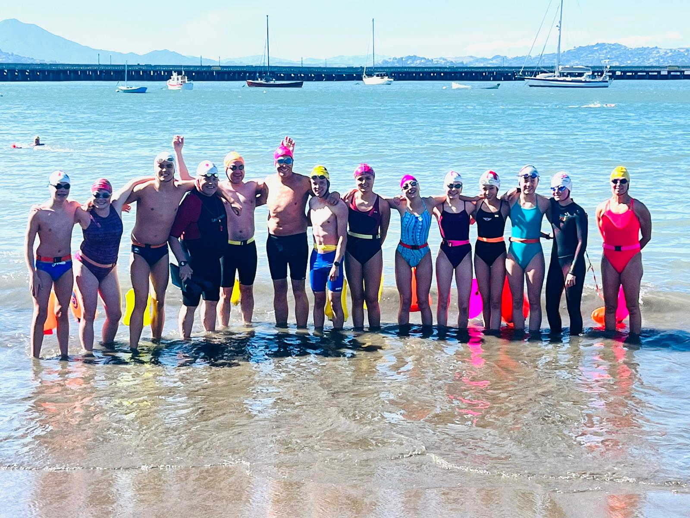

KeckCrewSF
home
All About Us!
KeckCrewSF was started during covid in 2020 by Mike Keck, a swim coach at the Olympic Club and Mike Tschantz-Hahn from the Bay Club. We swim in the San Francisco Bay and Paradise Beach Park in Tiburon. We are a strong suppoter of the SwimAcrossAmerica foundation and annually participate in the swims to fight cancer. Over the years we have succesfully completed many swims across the globe and are striving for more successful relays and individual races in the coming years!

Future Plans!
In the summer of 2025, we are swimming the Catalina Channel with swimmers: Owen, Dagny, Berlyn, Esme, Nina, and Timothy! It is a 21 mile overnight swim that we plan on completing in July. Filled with bioluminescence and dolphins, the Catalina Channel is a great swim to complete as the 2nd swim in the seven seas we plan on crossing.